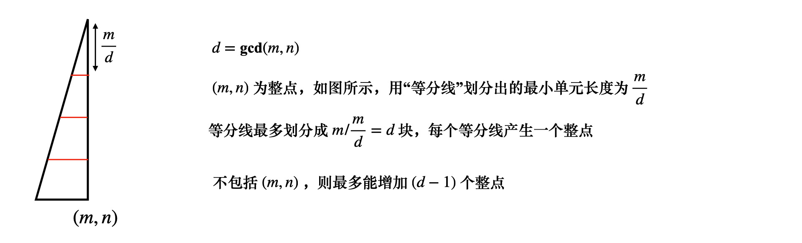
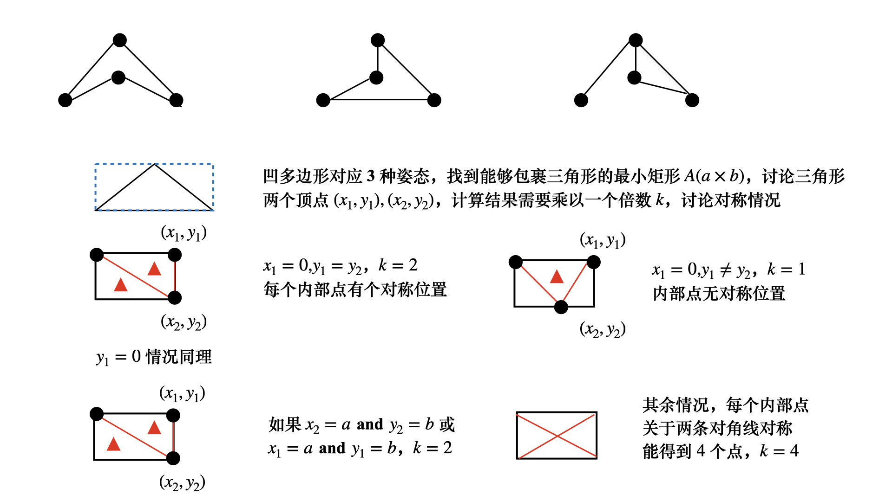

计数类 dp 举例
高速公路 UVA1393
先考虑 (i×j) 的方阵，左上角为原点 O，i∈[1,m],j∈[1,n] 来统计
可以知道当 gcd(i,j)=1 时，方阵对角线从来没有出现过
否则的话，设 d=gcd(i,j)，该对角线在方阵 (i/d×j/d) 中已经被统计过了
由此可以类似二维前缀和，定义 f(i,j) 为矩阵 [(0,0),(i,j)] 中有多少条满足条件的斜线
f(i,j)=f(i−1,j)+f(i,j−1)−f(i−1,j−1)+1(gcd(i,j)=1)
即 gcd(i,j) 等于 1 的时候需要新增加一条斜线
接下来可以利用前缀和，sum(i,j)=sum(i−1,j)+sum(i,j−1)−sum(i−1,j−1)+f(i,j)
注意到 (i×j) 矩阵中所有对角线都相交于中点
矩形 [(0,0),(i/2,j/2)] 和矩形 [(i/2,j/2),(i,j)] 关于中点对称
所以矩形 [(0,0),(i/2,j/2)] 出现的斜线在矩形 (i×j) 中又计算了一次
sum(i,j)=sum(i−1,j)+sum(i,j−1)−sum(i−1,j−1)+f(i,j)−f(i/2,j/2)
How many 0’s
假设原数位 num
可以采用按位统计的方法，x∈[low,high]，从低位到高位统计
假设当前位为 x，不妨设原数为 Left+x+Right （+ 为连接符）
- x=0，Right 有 k 位
此时 {1⋯Left}+0+[0→(99...9)k] 都比 num 小
高位有 (1Left) 种选择，低位有 100...0（k 个 0）种选择
res←res+Left⋅Bk，其中 Bk=100...0 （k 个 0）
- x=0，此时 {1⋯Left−1}+0+[(00...0)k→(99...9)k] 都比 num 小
此外左半部分固定为 Left+x，右半部分从 [(00...0)k→Right] 都比 num 小
所以 res←res+(Left−1)⋅Bk+(Right+1)
Supermean
先手算 (x1,x2,x3,x4) 的情况，此时答案为
(x1+3x2+3x3+x4)/2，同理 5 个数的时候 (x1+4x2+6x3+4x4+x5)/2
有 n 个数，x[1⋯n] 的系数对应于杨辉三角 f 的第 n 行，如果下标从 0 开始对应 f[n−1]
打表杨辉三角，递推关系
初始化 A(i,0)=A(i,i)=1∀i∈[0⋯n]
递推 A(i,j)=A(i−1,j)+A(i−1,j−1)
其中 i∈[2⋯n],j∈[1⋯n]，数组下标从 0 开始
注意，杨辉三角递推起点是第 3 行
由于 n 很大，打表杨辉三角肯定超时，必须直接计算
res=2n−1i=0∑n−1(in−1)⋅xi
最后的答案仅仅与杨辉三角 f[n−1] 行有关，可以在 O(n) 的时间复杂度内，根据递推公式
(kn)=(k−1n)⋅kn−k+1
不妨记 C[k]=log(kn)，递推关系为 C[k]=C[k−1]+log(n−k+1)−log(k)，初始化 C[0]=0
更新答案的时候，先计算出
p=log⎝⎜⎜⎜⎛2n−1(in−1)xi⎠⎟⎟⎟⎞,res←res+exp(p)
单色三角形
单色三角形比较难求，先求出非单色三角形个数，假设有两种颜色 Red, Blue
- 有一个公共点的两条异色边唯一对应一个非单色三角形
- 每个非单色三角形中，恰好有 2 个顶点，连接两条异色边
于是可以想到逐点统计，假设第 i 个点连接 ai 条红色边，n−1−ai 条蓝色边
这些边可以构成
res=21⋅(i=1∑n(1ai)⋅(1n−1−ai))
个非单色三角形，单色三角形个数为（假设任意三点不共线）(3n)−res
数三角形
根据容斥原理，需要减去三点共线的情况，三点都在水平和垂直线上比较容易处理，下面来看三点位于同一条对角线的情况
对于矩阵边长分别为 A(m×n)
记 yx=nm，这种形式与 gcd(m,n) 或者 φ(m) 有关

与高速公路一样的统计方法，记 f(i,j) 为边长 (i×j) 的矩形对角线的整点数
f(i,j)=f(i−1,j)+f(i,j−1)−f(i−1,j−1)+(gcd(i,j)−1)
用前缀和 sum(i,j) 表示矩形 ([1,1],[i,j]) （从原点 O 到 (i,j) 构成的矩形）对角线的整点数
sum(i,j)=sum(i−1,j)+sum(i,j−1)−sum(i−1,j−1)+f(i,j)
特别注意，f(i,j) 表示边长为 i×j 矩形中，除了 (1,1) 和 (i,j) 两个点之外
对角线上还有多少整点，此时矩形 ([1,1],[i,j]) 中，三点共线的点数为 (1d−1)
任选一个点与 (1,1),(m,n) 构成三点共线
那么端点不是 (1,1),(m,n) 的共线点如何求呢？注意前缀和 sum(x,y) 已经统计了 i<x,j<y 的小矩形的方案数了
所以最后的答案不是 2(3sum(m,n))，而是 2⋅sum(m,n)
数四边形
容斥的思路和数三角形类似，n×n 的网格中一共有 S=(n+1)⋅(n+1) 个节点
选出四个点，总方案数为 (4S)，水平垂直方案数为 D1=2(n+1)⋅(3n+1)⋅(S−3)
对角线方案数为 D2=2⋅(1S−3)(2⋅dp(n,n))，dp(n,n) 的求法和数三角形一致
但是 S−D1−D2 并不是本题的答案，原因是凹多边形的情况没有考虑
具体的解决方法需要一些其他知识
Pick 定理
给定顶点均为整点的简单多边形，Pick 定理说明了多边形面积 S，内部的格点数 i
以及边上格点数 b （包括顶点）的关系，A=i+2b−1
三角形面积公式的坐标表示，已知顶点 A(x1,y1),B(x2,y2),C(x3,y3)，三角形面积坐标表示
S=21⋅∣(x1y2+x2y3+x3y1)−(y1x2+y2x3+y3x1)∣
一般取其中一个顶点为原点 O，面积公式简化为
S=21⋅∣x1y2−x2y1∣
容斥原理，集合 S 中不具有性质 P1,P2,⋯,Pm 的对象个数由如下给出
∣A1∩A2∩⋯∩Am∣=∣S∣−∑∣Ai∣+∑∣Ai∩Aj∣−∑∣Ai∩Aj∩Ak∣+⋯+(−1)m∣A1∩A2∩⋯∩Am∣
本例中，A3 表示有 3 点共线的直线个数，A4 表示有 4 点共线的直线个数
计算 A3 的时候，直线上任取 3 个共线点，其余点任意，这样计算是包括四点共线 A4 的
有了以上背景，来看一下如何解决这个问题
- 首先，任意一个凹多边形对应 3 种不同的姿态，所以按照数三角形的统计方法
最后的结果是 S=凸多边形数+凹多边形数
但每一个凹多边形多出了 2 倍的贡献，所以最后答案为 S+2⋅(凹多边形数)
- 计算的时候，让三角形的一个顶点为原点，即计算三角形 O,A(x1,y1),B(x2,y2)
凹多边形数需要统计三角形内部的点数量 Sq，这可以用皮克定理给出，具体来说，需要统计姿态
这种问题常用的方法是，找出能包裹整个三角形的最小矩形

根据上图，可以算出 cnt(i,j)，表示任意矩形 ([0,0],[i,j]) 中有多少个凹多边形
i∈[1,i+n−1], j∈[1,j+n−1]，一共有 (i+n−1)⋅(j+n−1) 种不同候选矩形区域
接下来根据容斥原理，先算出有多少个符合条件的四元组 (x1,y1,x2,y2)
一共有 tot=(n+1)⋅(n+1) 个点
所以四元组有 S=(4tot) 种
A3,A4 分别表示恰有 3 点，4 点共线，共对角线的情况比较难处理，先考虑水平和垂直
- 对于水平和垂直，计算 A3 的时候，在水平和垂直上任选 3 个点
剩余一个点 Q （不妨称为自由点）在 tot−3 中任选
这包括了 A4 四点共线的情况，并且，每一个 A3 方案，将相应的 A4 方案重复计算了 4 次
对于任意一个四点共线方案 A4，在计算 A3 时候，可以选择的自由点 Q，恰有 (14) 种
所以每一个 A4，在计算 A3 的时候，多计算了 3⋅A4
扣除水平垂直共线，可能的方案数为S←S−2⋅((n+1)(3n+1)(tot−3)−3⋅(n+1)(4n+1))
- 接着计算对角线的情况，考虑格点矩阵 (i×j)，矩形边长分别为 i,j，矩形起点 O(x,y) 有几种可能？
x+i⩽n,⇒x⩽n−i, x⩾0
x∈[0,n−i], y∈[0,n−j]，所以可能的矩形有 K=(n−i+1)(n−j+1)
可以用类似 dp 的做法，枚举边长 i,j，满足条件的矩形有 K 种A3=K⋅2⋅(1gcd(i,j)−1)⋅(tot−3)
同样 A3 计算的时候，多算了 3A4A4=(2gcd(i,j)−1)
由此，扣除这部分贡献S←S−2K⋅(1gcd(i,j)−1)⋅(tot−3)+6K⋅(2gcd(i,j)−1)
- 最后把凹四边形加上，S←S+cnt(i,j)⋅K
状态压缩类计数dp
牛客推荐系统开发之选飞行棋子
检查每个棋子，以第 i 个棋子作为阶段，i∈[1,n]
f(i,S) 表示方案数，当前检查第 i 个棋子，可以出棋的人状态压缩为 S，考虑转移 f(i−1,S)→f(i,S′)
每个棋子都存在选与不选 2 种可能
- 不选第 i 个棋子，S′=S，f(i,S)+=f(i−1,S)
- 选第 i 个棋子，并且枚举第 i 个棋子由第 k 个人出，注意限制
首先第 k 个人要有第 i 个棋子，a(k,i)=1
其次，S 的第 k 位 =1，因为第 k 个人之前阶段出过棋子，在第 i 阶段不能出棋子
满足限制条件，存在转移 f(i,S∣(1≪k))+=f(i−1,S)
- 最后 f(n,(1≪4)−1) 就是答案
 微信
微信 支付宝
支付宝